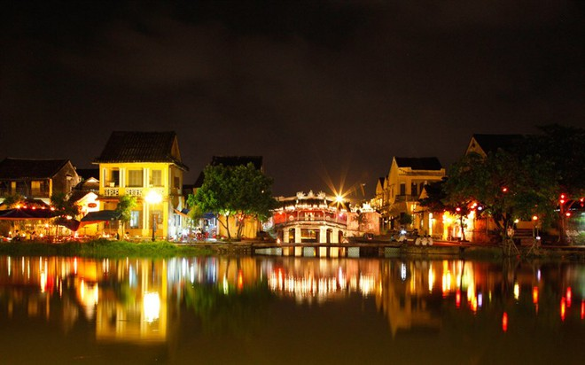

Du lịch Việt Nam
Phố cổ Hội An
Thành phố Hội An nằm bên bờ Bắc hạ lưu sông Thu Bồn, cách thành phố Đà Nẵng khoảng 25km về phía Đông Nam, cách thành phố Tam Kỳ khoảng 50km về phía Đông Bắc. Từ thế kỷ XVI, XVII nơi đây đã nổi tiếng với tên gọi Faifoo, là nơi giao thương và là trung tâm buôn bán lớn của các thương nhân Nhật Bản, Trung Quốc, Bồ Ðào Nha, Italia… ở Đông Nam Á.

Hội An ngày nay gần như bảo tồn nguyên trạng các quần thể di tích kiến trúc cổ và nền tảng văn hoá phi vật thể trong những phong tục tập quán, sinh hoạt tín ngưỡng, nghệ thuật dân gian, lễ hội văn hoá, các làng nghề truyền thống… Ngoài ra nét văn hóa ẩm thực ở Hội An cũng là một trong những điều đặc biệt mà du khách thường hay nhắc đến, nếu đã đến đây mà chưa thưởng thức các món ăn truyền thống như: Cao lầu, mì Quảng, bánh “hoa hồng trắng”… thì xem như chưa từng đến Hội An.
